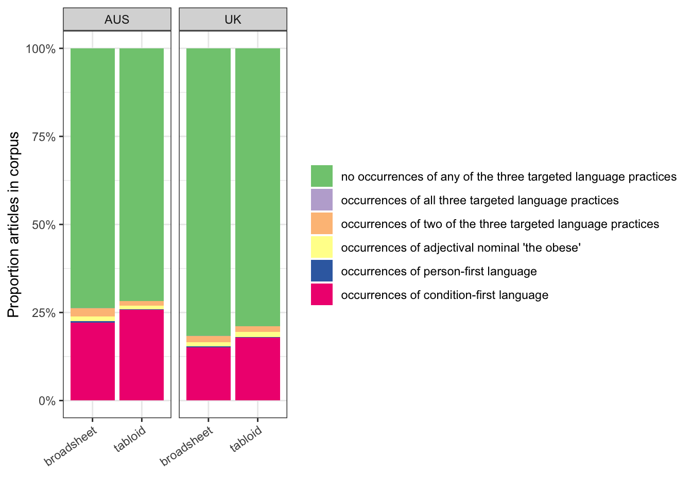
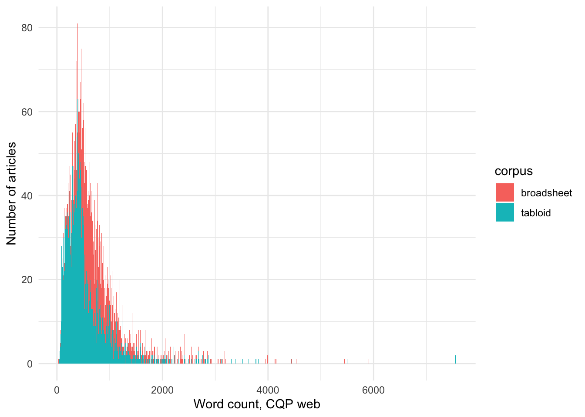
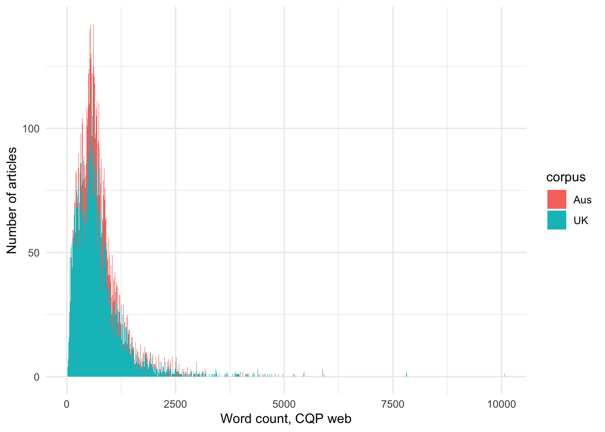

Executive summary
- Both corpora had data from 2008-2016, which was used for the analyses below.
We use the following tests to compare the sub-corpora:
- Chi-square tests, considering the total sub-corpus word count as the probability of observing a specific feature.
- Parametric t-tests comparing the mean frequencies, with texts without the feature considered to have a value of 0.
- The non-parametric Fisher-Pitman Permutation Test test with 10000 re-samples, comparing the mean frequencies, with texts without the feature considered to have a value of 0.
Article length differences:
- Articles in Australian broadsheets are longer than in Australian tabloids (mean 841.70 vs 555.04, respectively, p(FP) < 1e-05).
- Articles in UK broadsheets are longer than in UK tabloids (mean 718.31 vs 561.20, respectively, p(FP) < 1e-05).
- Articles in Australian broadsheets are longer than in UK broadsheets (mean 841.70 vs 718.31, respectively, p(FP) < 1e-05).
- There is no difference in length between articles in Australian and UK tabloids (mean 555.04 vs 561.20, respectively).
Use of person-first language:
Australian broadsheets have somewhat higher total number of instances (p(Chi-sq) < 0.05) and number of articles (p < 0.001) using person-first language than Australian tabloids, however, this difference is not supported when considering the mean frequency of language use across the corpus with parametric or non-parametric tests.
In the UK corpus, no differences in the number of instances or articles are observed between tabloids and broadsheets, when considering contingency table and frequency based analyses similar to the above.
Australian broadsheets have somewhat higher total number of instances (p(Chi-sq) < 0.005) and number of articles (p < 0.005) using person-first language than UK broadsheets. This difference is supported when considering the mean frequency of language use (mean Australian broadsheets = 17.81 words per million (wpm), mean UK broadsheets 8.52 wpm) across the corpus with parametric and non-parametric tests (p <0.05)).
There is no difference between the number of instances, articles or frequency of between Australian and UK tabloids.
Use of condition-first language:
Australian broadsheets have somewhat lower total number of instances (p(Chi-sq) < 0.001) and number of articles (p < 0.1) using condition-first language than Australian tabloids. If we instead look at the frequency of use, the opposite result is observed, with a higher frequency of condition-first language in tabloids than in broadsheets (mean broadsheets = 847.96 wpm vs 1315.95 wpm in tabloids, p(FP) < 1e-04). This discrepancy may be attributable to the fact that articles in broadsheets are substantially longer than those in tabloids, so comparing mean frequencies of the same number of instances results in a difference frequency because the word count being divided by for broadsheets is larger than that of tabloids.
In the UK corpus, there is a higher number of instances and articles containing at least one instance of condition-first language used in tabloids, and a lower number of instances in broadsheets (p < 0.001). A very small difference is also detected, with a higher mean frequency in tabloids than broadsheets (mean broadsheets 629.40 wpm, mean of tabloids 835.37 wpm, p(FP) < 1e-04)
There is a higher number of instances and articles with at least one instance (p(Chi-sq) < 0.001) of condition-first language in Australian vs UK broadsheets. If we consider the frequency, a very small difference is also detected, with Australian broadsheets having a higher frequency than UK ones (mean Australian 847.96 wpm, mean UK 629.40 wpm, p(FP) < 1e-04).
There is a higher number of instances and articles that use condition-first language in Australian tabloids, and a lower number in UK tabloids (p(Chi-sq) < 0.001). The frequency is also higher in Australian tabloids (mean Australian 1315.95 wpm, mean UK 835.37 wpm, p(FP) < 1e-04). This is especially striking given that there is no difference in overall article length between Australian and UK tabloids.
Use of adjectival nominal “the obese”
In the Australian corpus, no differences in the number of instances or articles are observed between tabloids and broadsheets when considering contingency table based analysis. There is a very small difference detected (p(t-test) < 0.05, p(FP) < 0.1) when considering frequencies, with tabloids having a higher frequency of use of condition-first language vs broadsheets (mean broadsheet frequency 42.65 wpm, mean tabloid 70.46 wpm). This discrepancy is most likely at least partially explained by the much longer article lengths of broadsheets vs tabloids in this corpus.
Similarly, in the UK corpus, no differences in the number of instances or articles are observed between tabloids and broadsheets when considering contingency table based analysis. There is a very small difference detected (p(t-test) < 0.01, p(FP) < 0.01) when considering frequencies, with tabloids having a higher frequency of use of “the obese” vs broadsheets (mean broadsheet frequency 62.96 wpm, mean tabloid 96.08 wpm). This discrepancy is most likely at least partially explained by the much longer article lengths of broadsheets vs tabloids in this corpus, similar to the Australian corpus.
When comparing use of “the obese” in the Australian vs UK broadsheets, no differences in the number of instances or articles are observed between tabloids and broadsheets when considering contingency table based analysis. There is a very small difference detected (p(t-test) < 0.01, p(FP) < 0.01) when considering frequencies, with UK broadsheets having a higher frequency of use of “the obese” vs Australian ones (mean frequency Australia - 42.65 wpm, UK - 62.96 wpm).
There is a somewhat lower number of total instances of use and articles with at least one instance of use of “the obese” in Australian tabloids, and a higher number in UK tabloids (p(Chi-sq) < 0.05). However, this difference is not supported by frequency analysis, when using both parametric or non-parametric tests.
Code
metadata <-read_csv(here::here("200_data_clean/", "full_metadata.csv"))
both_datasets <- read_csv(here::here("200_data_clean/", "both_datasets.csv")) |>
# get data for correct time window
filter(year >= 2008 & year <=2016)
source(here::here("400_analysis", "functions.R"))
# get some wordcounts
au_tabloid_wordcounts <- get_wc(
corpuslabel = "AUS",
sourcetypelabel = "tabloid")
au_broadsheet_wordcounts <- get_wc(
corpuslabel = "AUS",
sourcetypelabel = "broadsheet")
uk_tabloid_wordcounts <- get_wc(
corpuslabel = "UK",
sourcetypelabel = "tabloid")
uk_broadsheet_wordcounts <- get_wc(
corpuslabel = "UK",
sourcetypelabel = "broadsheet")
frequency_table <-
metadata |>
select(article_id, corpus, source_type) |>
left_join(
{
# this gets a frequency table per article where
# a language type is used
both_datasets |>
select(dataset, article_id, freq_per_million_words) |>
pivot_wider(names_from = dataset,
names_glue = "{dataset}_freq",
values_from = freq_per_million_words,
values_fill = 0)}
) |>
replace_na(list(cond_freq = 0,
pers_freq = 0,
obes_freq = 0))Proportion and number of articles using any of the language types in the two corpora
Let’s find the total number of articles that use one or more language types in the two corpora.
Code
article_id_cond <- get_article_ids(both_datasets, "cond")
article_id_pers <- get_article_ids(both_datasets, "pers")
article_id_obes <- get_article_ids(both_datasets, "obes")
ggvenn(list(
`Condition first` = article_id_cond,
`Person first` = article_id_pers,
`Obese` = article_id_obes),
fill_color = c("white", "white", "white")) +
labs(title = "Number of articles that use the language features")Code
for_stacked_chart <-
metadata |>
select(article_id, corpus, source_type) |>
mutate(grp = case_when(
article_id %in% base::intersect(base::intersect(article_id_cond, article_id_pers), article_id_obes) ~ "all3",
# two
article_id %in% base::intersect(article_id_cond, article_id_pers) ~ "cond_pers",
article_id %in% base::intersect(article_id_obes, article_id_cond) ~ "cond_obes",
article_id %in% base::intersect(article_id_obes, article_id_pers) ~ "pers_obes",
# one
article_id %in% article_id_cond ~ "cond",
article_id %in% article_id_pers ~ "pers",
article_id %in% article_id_obes ~ "obes",
# none
TRUE ~ "none"
))
ggsave(device = "png",
here::here("400_analysis","stacked_chart.png"),
bg = "white",
width = 10,
height = 4)
for_stacked_chart |>
mutate(group = case_when(
grp == "cond_obes" ~ "two",
grp == "pers_obes" ~ "two",
grp == "cond_pers" ~ "two",
TRUE ~ grp
)) |>
mutate(group = factor(group,
levels = c("none", "all3", "two", "cond_obes", "cond_pers", "pers_obes", "obes", "pers", "cond"),
labels = c(
"no occurrences of any of the three targeted language practices",
"occurrences of all three targeted language practices",
"occurrences of two of the three targeted language practices",
"cond_obes", "cond_pers", "pers_obes",
"occurrences of adjectival nominal 'the obese'",
"occurrences of person-first language",
"occurrences of condition-first language"
))) |>
ggplot() +
geom_bar(
aes(fill=group,
x=source_type),
position="fill") +
facet_grid(~corpus) + theme_bw() +
scale_fill_brewer(palette = "Accent") +
scale_y_continuous(name = "Proportion articles in corpus",
labels = scales::percent) +
# set axis limits in coord_cartesian
# + coord_cartesian(ylim = c(0, 0.4))
# scale_fill_grey(start = 0.9, end = 0.2) +
theme(axis.text.x = element_text(angle = 35, vjust = 1, hjust=1))+
labs(x = "",
fill = "") 
Code
corpus_articles_grouped <- for_stacked_chart |>
group_by(corpus, source_type) |>
count() |>
rename(total_articles = n)
for_stacked_chart |>
group_by(corpus, source_type) |>
count(grp) |>
arrange(-n) |>
left_join(corpus_articles_grouped) |>
mutate(percent = round(100 * n/total_articles, 2)) |>
select(-total_articles) |>
pivot_wider(names_from = corpus, values_from = c(n, percent), values_fill = 0) |>
rename(observed_language = grp) |>
kable()| source_type | observed_language | n_UK | n_AUS | percent_UK | percent_AUS |
|---|---|---|---|---|---|
| broadsheet | none | 6170 | 1631 | 81.66 | 73.80 |
| tabloid | none | 6156 | 2271 | 78.91 | 71.69 |
| tabloid | cond | 1395 | 815 | 17.88 | 25.73 |
| broadsheet | cond | 1145 | 490 | 15.15 | 22.17 |
| broadsheet | cond_obes | 112 | 33 | 1.48 | 1.49 |
| tabloid | cond_obes | 112 | 37 | 1.44 | 1.17 |
| tabloid | obes | 109 | 32 | 1.40 | 1.01 |
| broadsheet | obes | 91 | 28 | 1.20 | 1.27 |
| broadsheet | cond_pers | 18 | 17 | 0.24 | 0.77 |
| tabloid | pers | 16 | 7 | 0.21 | 0.22 |
| broadsheet | pers | 15 | 10 | 0.20 | 0.45 |
| tabloid | cond_pers | 11 | 6 | 0.14 | 0.19 |
| broadsheet | all3 | 4 | 1 | 0.05 | 0.05 |
| broadsheet | pers_obes | 1 | 0 | 0.01 | 0.00 |
| tabloid | all3 | 1 | 0 | 0.01 | 0.00 |
| tabloid | pers_obes | 1 | 0 | 0.01 | 0.00 |
Article length differences in Australian and UK broadsheets and tabloids
Australian broadsheets vs tabloids
Are texts in the Australian sub-corpus used for this study also longer than in broadsheets than in tabloids, like was reported for the larger study?
Code
histogram_pairwise(au_broadsheet_wordcounts,
au_tabloid_wordcounts,
"broadsheet",
"tabloid")
Let’s use a t-test to consider?
Effect sizes were labelled following Cohen’s (1988) recommendations.
The Welch Two Sample t-test testing the difference between au_broadsheet_wordcounts and au_tabloid_wordcounts (mean of x = 841.70, mean of y = 555.04) suggests that the effect is positive, statistically significant, and medium (difference = 286.66, 95% CI [257.15, 316.17], t(4261.47) = 19.04, p < .001; Cohen’s d = 0.54, 95% CI [0.48, 0.59])
Does the non-parametric FP test support this as well?
Code
fp_test_wc(wc1 = au_broadsheet_wordcounts,
wc2 = au_tabloid_wordcounts,
label1 = "broadsheet",
label2 = "tabloid")
Approximative Two-Sample Fisher-Pitman Permutation Test
data: wc by label (broadsheet, tabloid)
Z = 18.92, p-value < 1e-04
alternative hypothesis: true mu is not equal to 0Yes, it does.
UK broadsheets vs tabloids
Are texts in tabloids also shorter than in broadsheets in the UK, like they are in Australia?
Code
histogram_pairwise(wc1 = uk_broadsheet_wordcounts,
wc2 = uk_tabloid_wordcounts,
label1 = "broadsheets",
label2 = "tabloids")Effect sizes were labelled following Cohen’s (1988) recommendations.
The Welch Two Sample t-test testing the difference between uk_broadsheet_wordcounts and uk_tabloid_wordcounts (mean of x = 718.31, mean of y = 561.20) suggests that the effect is positive, statistically significant, and small (difference = 157.11, 95% CI [139.76, 174.46], t(14856.49) = 17.75, p < .001; Cohen’s d = 0.29, 95% CI [0.26, 0.32])
Yes, they are, although the effect size is not as large (small vs medium for the Australian corpus). Hence this is what probably explains the contradiction.
Does the non-parametric FP test support this as well?
Code
fp_test_wc(wc1 = uk_broadsheet_wordcounts,
wc2 = uk_tabloid_wordcounts,
label1 = "broadsheet",
label2 = "tabloid")
Approximative Two-Sample Fisher-Pitman Permutation Test
data: wc by label (broadsheet, tabloid)
Z = 17.615, p-value < 1e-04
alternative hypothesis: true mu is not equal to 0Yes, it does.
Australian vs UK broadsheets
Are texts in broadsheets from Australia and the UK different in length?
Code
histogram_pairwise(au_broadsheet_wordcounts,
uk_broadsheet_wordcounts,
"Aus",
"UK")
Let’s use a t-test to consider?
Effect sizes were labelled following Cohen’s (1988) recommendations.
The Welch Two Sample t-test testing the difference between au_broadsheet_wordcounts and uk_broadsheet_wordcounts (mean of x = 841.70, mean of y = 718.31) suggests that the effect is positive, statistically significant, and small (difference = 123.39, 95% CI [95.96, 150.83], t(3660.02) = 8.82, p < .001; Cohen’s d = 0.21, 95% CI [0.16, 0.26])
Yes, there appears to be a small difference in text length between Australian and UK broadsheets, with articles in UK broadsheets being somewhat shorter.
Does the non-parametric FP test support this as well?
Code
fp_test_wc(wc1 = au_broadsheet_wordcounts,
wc2 = uk_broadsheet_wordcounts,
label1 = "AUS",
label2 = "UK")
Approximative Two-Sample Fisher-Pitman Permutation Test
data: wc by label (AUS, UK)
Z = 8.6879, p-value < 1e-04
alternative hypothesis: true mu is not equal to 0Yes, it does.
Australian vs UK tabloids
Are texts in tabloids from Australia and the UK different in length?
Code
histogram_pairwise(au_tabloid_wordcounts,
uk_tabloid_wordcounts,
"Aus",
"UK")Let’s use a t-test to consider?
Effect sizes were labelled following Cohen’s (1988) recommendations.
The Welch Two Sample t-test testing the difference between au_tabloid_wordcounts and uk_tabloid_wordcounts (mean of x = 555.04, mean of y = 561.20) suggests that the effect is negative, statistically not significant, and very small (difference = -6.16, 95% CI [-26.64, 14.31], t(6001.53) = -0.59, p = 0.555; Cohen’s d = -0.01, 95% CI [-0.05, 0.03])
No, there appears to be no difference in length between articles in Australian and UK tabloids.
Does the non-parametric FP test support this as well?
Code
fp_test_wc(wc1 = au_tabloid_wordcounts,
wc2 = uk_tabloid_wordcounts,
label1 = "AUS",
label2 = "UK")
Approximative Two-Sample Fisher-Pitman Permutation Test
data: wc by label (AUS, UK)
Z = -0.58397, p-value = 0.5622
alternative hypothesis: true mu is not equal to 0Yes, it also supports the observation of no difference between Australian and UK tabloid article lengths.
Person-first language
Australian corpus
Let’s generate a frequency table (sum of no hits in text) for person-first language:
Code
| AUS | UK | |
|---|---|---|
| broadsheet | 30 | 41 |
| tabloid | 15 | 30 |
We also need to find the probability of observing these values given the total word count in each of the cells (for example, the number of total words in the Australian broadsheet corpus). Let’s calculate these values:
Code
generate_wc(metadata) |>
kable()| AUS | UK | |
|---|---|---|
| broadsheet | 1860166 | 5427551 |
| tabloid | 1758364 | 4377933 |
Is there a difference in the frequency of use of person-first language in tabloids and broadsheets in the Australian corpus?
Code
get_chisq_tabloid_broadsheet(pers_4chisq_matrix_sumhits,
col_no = 1,
type = "wc") |>
kable()| method | Chi-squared test for given probabilities |
| broadsheet_observed | 30 |
| broadsheet_expected | 23.133 |
| tabloid_observed | 15 |
| tabloid_expected | 21.867 |
| statistic | 4.194932 |
| p.value | 0.04054498 |
| parameter | 1 |
| statistic_uncorrected | 4.194932 |
| pval_uncorrected | 0.04054498 |
Based on a Chi-square test, there is a slight difference between the expected and observed frequency of instances of person-first language in the Australian corpus (p < 0.05), with broadsheets having somewhat more instances of person-first language than tabloids in the Australian corpus.
This also holds true when we consider the number of articles that have at least one instance of person-first language:
Code
get_chisq_tabloid_broadsheet(pers_4chisq_matrix_noarticles,
col_no = 1,
type = "art") |>
kable()| method | Chi-squared test for given probabilities |
| broadsheet_observed | 28 |
| broadsheet_expected | 16.84827 |
| tabloid_observed | 13 |
| tabloid_expected | 24.15173 |
| statistic | 12.53039 |
| p.value | 0.0004003854 |
| parameter | 1 |
| statistic_uncorrected | 12.53039 |
| pval_uncorrected | 0.0004003854 |
If we consider a t-test on the frequency (per million words) of the Australian corpus (including all texts in each sub-corpus, including those without instances), a difference is not detected.
Code
ttest_broad_vs_tabl(frequency_table, "AUS", "pers_freq")Effect sizes were labelled following Cohen’s (1988) recommendations.
The Welch Two Sample t-test testing the difference between broadsheet and tabloid (mean of x = 17.81, mean of y = 11.68) suggests that the effect is positive, statistically not significant, and very small (difference = 6.13, 95% CI [-4.24, 16.51], t(5183.11) = 1.16, p = 0.247; Cohen’s d = 0.03, 95% CI [-0.02, 0.09])
If we instead use a non-parametric test, there is also no difference detected.
Code
fp_test_broad_vs_tabl(freq_table = frequency_table,
corpus_label = "AUS",
dataset = "pers",
myformula = formula(pers_freq ~ source_type),
dist = mydistribution)
Approximative Two-Sample Fisher-Pitman Permutation Test
data: pers_freq by source_type (broadsheet, tabloid)
Z = 1.1248, p-value = 0.2674
alternative hypothesis: true mu is not equal to 0UK corpus
What about the total number of instances of person-first language in the UK corpus?
Code
get_chisq_tabloid_broadsheet(pers_4chisq_matrix_sumhits,
col_no = 2,
type = "wc") |>
kable()| method | Chi-squared test for given probabilities |
| broadsheet_observed | 41 |
| broadsheet_expected | 39.30006 |
| tabloid_observed | 30 |
| tabloid_expected | 31.69994 |
| statistic | 0.1646923 |
| p.value | 0.6848727 |
| parameter | 1 |
| statistic_uncorrected | 0.1646923 |
| pval_uncorrected | 0.6848727 |
No difference is observed between the number of observed and expected instances of use of person-first language in the UK corpus between tabloids and broadsheets.
Code
get_chisq_tabloid_broadsheet(pers_4chisq_matrix_noarticles,
col_no = 2,
type = "art") |>
kable()| method | Chi-squared test for given probabilities |
| broadsheet_observed | 38 |
| broadsheet_expected | 32.96555 |
| tabloid_observed | 29 |
| tabloid_expected | 34.03445 |
| statistic | 1.513559 |
| p.value | 0.2185969 |
| parameter | 1 |
| statistic_uncorrected | 1.513559 |
| pval_uncorrected | 0.2185969 |
This lack of a difference also holds true when we consider the number of articles that have at least one instance of person-first language.
If we consider a t-test on the frequency (per million words) of the UK corpus (including all texts in each sub-corpus, including those without instances), a difference is not detected.
Code
ttest_broad_vs_tabl(frequency_table, "UK", "pers_freq")Effect sizes were labelled following Cohen’s (1988) recommendations.
The Welch Two Sample t-test testing the difference between broadsheet and tabloid (mean of x = 8.52, mean of y = 12.12) suggests that the effect is negative, statistically not significant, and very small (difference = -3.61, 95% CI [-9.81, 2.60], t(13624.58) = -1.14, p = 0.255; Cohen’s d = -0.02, 95% CI [-0.05, 0.01])
If we use a non-parametric test, there is also no difference detected.
Code
fp_test_broad_vs_tabl(freq_table = frequency_table,
corpus_label = "UK",
dataset = "pers",
myformula = formula(pers_freq ~ source_type),
dist = mydistribution)
Approximative Two-Sample Fisher-Pitman Permutation Test
data: pers_freq by source_type (broadsheet, tabloid)
Z = -1.1324, p-value = 0.2599
alternative hypothesis: true mu is not equal to 0Australian vs UK broadsheets
Let’s compare Australian and UK broadsheets.
Is there a difference in the frequency of use of person-first language in broadsheets in the Australian vs UK corpus?
Code
# broadsheets
get_chisq_aus_uk(pers_4chisq_matrix_sumhits,
row_no = 1,
type = "wc")|>
kable()| broadsheet | |
|---|---|
| method | Chi-squared test for given probabilities |
| AUS_observed | 30 |
| AUS_expected | 18.12252 |
| UK_observed | 41 |
| UK_expected | 52.87748 |
| statistic | 10.45244 |
| p.value | 0.001224874 |
| parameter | 1 |
There is a difference between the expected and observed frequency of instances of person-first language in Australian vs UK broadsheets(p < 0.005).
We can see that person-first language is used more frequently than we would expect in Australian broadsheets, and less frequently in UK ones.
Code
# broadsheets
get_chisq_aus_uk(pers_4chisq_matrix_noarticles,
row_no = 1,
type = "art")|>
kable()| broadsheet | |
|---|---|
| method | Chi-squared test for given probabilities |
| AUS_observed | 28 |
| AUS_expected | 14.93549 |
| UK_observed | 38 |
| UK_expected | 51.06451 |
| statistic | 14.77037 |
| p.value | 0.0001214283 |
| parameter | 1 |
This also holds true when we consider the number of articles that have at least one instance of person-first language.
If we consider the frequency (per million words) of the Australian vs UK broadsheets (including all texts in each sub-corpus, including those without instances), a very small difference is detected, with Australian broadsheets having a higher frequency than UK ones:
Code
ttest_aus_vs_uk(frequency_table, "broadsheet", "pers_freq")Effect sizes were labelled following Cohen’s (1988) recommendations.
The Welch Two Sample t-test testing the difference between aus and uk (mean of x = 17.81, mean of y = 8.52) suggests that the effect is positive, statistically significant, and very small (difference = 9.30, 95% CI [1.14, 17.46], t(3250.78) = 2.23, p = 0.026; Cohen’s d = 0.08, 95% CI [9.57e-03, 0.15])
Is this supported by non-parametric analysis
Code
fp_test_aus_vs_uk(freq_table = frequency_table,
source_label = "broadsheet",
dataset = "pers",
myformula = formula(pers_freq ~ corpus),
dist = mydistribution)
Approximative Two-Sample Fisher-Pitman Permutation Test
data: pers_freq by corpus (AUS, UK)
Z = 2.408, p-value = 0.014
alternative hypothesis: true mu is not equal to 0Australian vs UK tabloids
Let’s compare Australian and UK tabloids
Is there a difference in the frequency of use of person-first language in tabloids in the Australian vs UK corpus?
Code
# tabloids
get_chisq_aus_uk(pers_4chisq_matrix_sumhits,
row_no = 2,
type = "wc")|>
kable()| tabloid | |
|---|---|
| method | Chi-squared test for given probabilities |
| AUS_observed | 15 |
| AUS_expected | 12.89481 |
| UK_observed | 30 |
| UK_expected | 32.10519 |
| statistic | 0.4817317 |
| p.value | 0.487639 |
| parameter | 1 |
The observed and expected number of instances of person-first language is approximately the same in Australian and British tabloids.
This also holds true when we consider the number of articles that have at least one instance of person-first language:
Code
# tabloids
get_chisq_aus_uk(pers_4chisq_matrix_noarticles,
row_no = 2,
type = "art")|>
kable()| tabloid | |
|---|---|
| method | Chi-squared test for given probabilities |
| AUS_observed | 13 |
| AUS_expected | 12.13019 |
| UK_observed | 29 |
| UK_expected | 29.86981 |
| statistic | 0.0877007 |
| p.value | 0.7671208 |
| parameter | 1 |
If we consider the frequency (per million words) in the Australian vs UK tabloids (including all texts in each sub-corpus, including those without instances), no significant differences are observed as well.
Code
ttest_aus_vs_uk(frequency_table, "tabloid", "pers_freq")Effect sizes were labelled following Cohen’s (1988) recommendations.
The Welch Two Sample t-test testing the difference between aus and uk (mean of x = 11.68, mean of y = 12.12) suggests that the effect is negative, statistically not significant, and very small (difference = -0.45, 95% CI [-9.37, 8.48], t(6445.87) = -0.10, p = 0.922; Cohen’s d = -2.44e-03, 95% CI [-0.05, 0.05])
The non-parametric test leads to a similar conclusion:
Code
fp_test_aus_vs_uk(frequency_table,
"tabloid",
"pers",
formula(pers_freq ~ corpus),
dist = mydistribution)
Approximative Two-Sample Fisher-Pitman Permutation Test
data: pers_freq by corpus (AUS, UK)
Z = -0.093724, p-value = 0.9267
alternative hypothesis: true mu is not equal to 0Condition-first language
Let’s generate a frequency table (sum of no hits in text) for condition-first language:
Code
| AUS | UK | |
|---|---|---|
| broadsheet | 1143 | 2320 |
| tabloid | 1428 | 2399 |
Australian corpus
We can assess the difference between these total number of uses of condition-first language in the Australian corpus, using a Chi-square test:
Code
get_chisq_tabloid_broadsheet(cond_4chisq_matrix_sumhits,
col_no = 1,
type = "wc") |>
kable()| method | Chi-squared test for given probabilities |
| broadsheet_observed | 1143 |
| broadsheet_expected | 1321.666 |
| tabloid_observed | 1428 |
| tabloid_expected | 1249.334 |
| statistic | 49.70315 |
| p.value | 1.788587e-12 |
| parameter | 1 |
| statistic_uncorrected | 49.70315 |
| pval_uncorrected | 1.788587e-12 |
There is a higher number of instances of condition-first language used in tabloids, and a lower number of instances in broadsheets in the Australian corpus.
Code
get_chisq_tabloid_broadsheet(cond_4chisq_matrix_noarticles,
col_no = 1,
type = "art")|>
kable()| method | Chi-squared test for given probabilities |
| broadsheet_observed | 541 |
| broadsheet_expected | 574.8959 |
| tabloid_observed | 858 |
| tabloid_expected | 824.1041 |
| statistic | 3.392658 |
| p.value | 0.06548731 |
| parameter | 1 |
| statistic_uncorrected | 3.392658 |
| pval_uncorrected | 0.06548731 |
This also somewhat holds true, although is not highly significant, when we consider the number of articles that have at least one instance of condition-first language.
If we consider a t-test on the frequency (per million words) of the Australian corpus (including all texts in each sub-corpus, including those without instances), a very small difference is detected, with tabloids having a higher frequency of use of condition-first language vs broadsheets.
Code
ttest_broad_vs_tabl(frequency_table, "AUS", "cond_freq")Effect sizes were labelled following Cohen’s (1988) recommendations.
The Welch Two Sample t-test testing the difference between broadsheet and tabloid (mean of x = 847.96, mean of y = 1315.95) suggests that the effect is negative, statistically significant, and very small (difference = -467.99, 95% CI [-614.83, -321.16], t(5364.35) = -6.25, p < .001; Cohen’s d = -0.17, 95% CI [-0.22, -0.12])
Code
fp_test_broad_vs_tabl(frequency_table,
corpus_label = "AUS",
dataset = "cond",
formula(cond_freq ~ source_type),
dist = mydistribution)
Approximative Two-Sample Fisher-Pitman Permutation Test
data: cond_freq by source_type (broadsheet, tabloid)
Z = -5.8137, p-value < 1e-04
alternative hypothesis: true mu is not equal to 0UK corpus
We can assess the difference between these total number of uses of condition-first language in the UK corpus, using a Chi-square test. There is a higher number of instances of condition-first language used in tabloids, and a lower number of instances in broadsheets, in the UK corpus:
Code
get_chisq_tabloid_broadsheet(cond_4chisq_matrix_sumhits,
col_no = 2,
type = "wc") |>
kable()| method | Chi-squared test for given probabilities |
| broadsheet_observed | 2320 |
| broadsheet_expected | 2612.07 |
| tabloid_observed | 2399 |
| tabloid_expected | 2106.93 |
| statistic | 73.14586 |
| p.value | 1.204139e-17 |
| parameter | 1 |
| statistic_uncorrected | 73.14586 |
| pval_uncorrected | 1.204139e-17 |
This also holds true when we consider the number of articles that have at least one instance of condition-first language.
Code
get_chisq_tabloid_broadsheet(cond_4chisq_matrix_noarticles,
col_no = 2,
type = "art") |>
kable()| method | Chi-squared test for given probabilities |
| broadsheet_observed | 1279 |
| broadsheet_expected | 1376.681 |
| tabloid_observed | 1519 |
| tabloid_expected | 1421.319 |
| statistic | 13.644 |
| p.value | 0.0002209459 |
| parameter | 1 |
| statistic_uncorrected | 13.644 |
| pval_uncorrected | 0.0002209459 |
If we consider a t-test on the frequency (per million words) of the UK corpus (including all texts in each sub-corpus, including those without instances), a very small difference is detected, with a higher mean frequency in tabloids than broadsheets.
Code
ttest_broad_vs_tabl(frequency_table, "UK", "cond_freq")Effect sizes were labelled following Cohen’s (1988) recommendations.
The Welch Two Sample t-test testing the difference between broadsheet and tabloid (mean of x = 629.40, mean of y = 835.37) suggests that the effect is negative, statistically significant, and very small (difference = -205.97, 95% CI [-277.76, -134.18], t(15067.94) = -5.62, p < .001; Cohen’s d = -0.09, 95% CI [-0.12, -0.06])
This is also supported by the FP test:
Code
fp_test_broad_vs_tabl(frequency_table,
corpus_label = "UK",
dataset = "cond")
Approximative Two-Sample Fisher-Pitman Permutation Test
data: cond_freq by source_type (broadsheet, tabloid)
Z = -5.603, p-value < 1e-04
alternative hypothesis: true mu is not equal to 0Australian vs UK broadsheets
There is a higher number of uses of condition-first language in Australian broadsheets, and a lower number in UK broadsheets:
Code
get_chisq_aus_uk(cond_4chisq_matrix_sumhits,
row_no = 1,
type = "wc") |>
kable()| broadsheet | |
|---|---|
| method | Chi-squared test for given probabilities |
| AUS_observed | 1143 |
| AUS_expected | 883.9195 |
| UK_observed | 2320 |
| UK_expected | 2579.081 |
| statistic | 101.9634 |
| p.value | 5.655592e-24 |
| parameter | 1 |
This also holds true when we consider the number of articles that have at least one instance of condition-first language:
Code
get_chisq_aus_uk(cond_4chisq_matrix_noarticles,
row_no = 1,
type = "art") |>
kable()| broadsheet | |
|---|---|
| method | Chi-squared test for given probabilities |
| AUS_observed | 541 |
| AUS_expected | 411.8575 |
| UK_observed | 1279 |
| UK_expected | 1408.143 |
| statistic | 52.33792 |
| p.value | 4.672644e-13 |
| parameter | 1 |
If we consider the frequency (per million words) of the Australian vs UK broadsheets (including all texts in each sub-corpus, including those without instances), a very small difference is detected, with Australian broadsheets having a higher frequency than UK ones:
Code
ttest_aus_vs_uk(frequency_table, "broadsheet", "cond_freq")Effect sizes were labelled following Cohen’s (1988) recommendations.
The Welch Two Sample t-test testing the difference between aus and uk (mean of x = 847.96, mean of y = 629.40) suggests that the effect is positive, statistically significant, and very small (difference = 218.56, 95% CI [115.85, 321.27], t(3442.55) = 4.17, p < .001; Cohen’s d = 0.14, 95% CI [0.08, 0.21])
This is also supported by the FP test:
Code
fp_test_aus_vs_uk(freq_table = frequency_table,
source_label = "broadsheet",
dataset = "cond",
myformula = formula(cond_freq ~ corpus),
dist = mydistribution)
Approximative Two-Sample Fisher-Pitman Permutation Test
data: cond_freq by corpus (AUS, UK)
Z = 4.3017, p-value < 1e-04
alternative hypothesis: true mu is not equal to 0Australian vs UK tabloids
There is a higher number of uses of condition-first language in Australian tabloids, and a lower number in UK tabloids:
Code
get_chisq_aus_uk(cond_4chisq_matrix_sumhits,
row_no = 2,
type = "wc") |>
kable()| tabloid | |
|---|---|
| method | Chi-squared test for given probabilities |
| AUS_observed | 1428 |
| AUS_expected | 1096.632 |
| UK_observed | 2399 |
| UK_expected | 2730.368 |
| statistic | 140.3453 |
| p.value | 2.237234e-32 |
| parameter | 1 |
This also holds true when we consider the number of articles that have at least one instance of condition-first language:
Code
get_chisq_aus_uk(cond_4chisq_matrix_noarticles,
row_no = 2,
type = "art") |>
kable()| tabloid | |
|---|---|
| method | Chi-squared test for given probabilities |
| AUS_observed | 858 |
| AUS_expected | 686.5107 |
| UK_observed | 1519 |
| UK_expected | 1690.489 |
| statistic | 60.23424 |
| p.value | 8.421443e-15 |
| parameter | 1 |
If we consider the frequency (per million words) in the Australian vs UK tabloids (including all texts in each sub-corpus, including those without instances), the frequency of use of condition-first language is higher in Australian tabloids, and lower in UK ones.
Code
ttest_aus_vs_uk(frequency_table, "tabloid", "cond_freq")Effect sizes were labelled following Cohen’s (1988) recommendations.
The Welch Two Sample t-test testing the difference between aus and uk (mean of x = 1315.95, mean of y = 835.37) suggests that the effect is positive, statistically significant, and small (difference = 480.58, 95% CI [353.41, 607.75], t(4659.62) = 7.41, p < .001; Cohen’s d = 0.22, 95% CI [0.16, 0.27])
This is also supported by the FP test:
Code
fp_test_aus_vs_uk(freq_table = frequency_table,
source_label = "tabloid",
dataset = "cond",
myformula = formula(cond_freq ~ corpus),
dist = mydistribution)
Approximative Two-Sample Fisher-Pitman Permutation Test
data: cond_freq by corpus (AUS, UK)
Z = 8.3394, p-value < 1e-04
alternative hypothesis: true mu is not equal to 0As shown above, there is no significant difference in articles lengths between Australian and UK tabloids.
Use of adjectival nominal “the obese”
Let’s generate a frequency table (sum of no hits in text) for use of “the obese”:
Code
| AUS | UK | |
|---|---|---|
| broadsheet | 72 | 263 |
| tabloid | 78 | 264 |
Australian corpus
We can assess the difference between these total number of uses of “the obese” language in the Australian corpus, using a Chi-square test:
Code
get_chisq_tabloid_broadsheet(obes_4chisq_matrix_sumhits,
col_no = 1,
type = "wc") |>
kable()| method | Chi-squared test for given probabilities |
| broadsheet_observed | 72 |
| broadsheet_expected | 77.11001 |
| tabloid_observed | 78 |
| tabloid_expected | 72.88999 |
| statistic | 0.6968781 |
| p.value | 0.4038347 |
| parameter | 1 |
| statistic_uncorrected | 0.6968781 |
| pval_uncorrected | 0.4038347 |
There is no difference in the total count of use of “the obese” in Australian broadsheets vs tabloids.
Code
get_chisq_tabloid_broadsheet(obes_4chisq_matrix_noarticles,
col_no = 1,
type = "art")|>
kable()| method | Chi-squared test for given probabilities |
| broadsheet_observed | 62 |
| broadsheet_expected | 53.83228 |
| tabloid_observed | 69 |
| tabloid_expected | 77.16772 |
| statistic | 2.103752 |
| p.value | 0.1469382 |
| parameter | 1 |
| statistic_uncorrected | 2.103752 |
| pval_uncorrected | 0.1469382 |
There is no difference in the number of articles that use “the obese” in Australian broadsheets vs tabloids.
If we consider a t-test on the frequency (per million words) of the Australian corpus (including all texts in each sub-corpus, including those without instances), a very small difference is detected (p < 0.05), with tabloids having a higher frequency of use of condition-first language vs broadsheets.
Code
ttest_broad_vs_tabl(frequency_table, "AUS", "obes_freq")Effect sizes were labelled following Cohen’s (1988) recommendations.
The Welch Two Sample t-test testing the difference between broadsheet and tabloid (mean of x = 42.65, mean of y = 70.46) suggests that the effect is negative, statistically significant, and very small (difference = -27.81, 95% CI [-53.34, -2.29], t(4843.32) = -2.14, p = 0.033; Cohen’s d = -0.06, 95% CI [-0.12, -5.04e-03])
This could be attributed in part to the longer article length described for tabloids than for broadsheets above.
This is not strongly supported (p < 0.1) via a non-parametric FP test:
Code
fp_test_broad_vs_tabl(frequency_table,
corpus_label = "AUS",
dataset = "obes",
formula(obes_freq ~ source_type),
dist = mydistribution)
Approximative Two-Sample Fisher-Pitman Permutation Test
data: obes_freq by source_type (broadsheet, tabloid)
Z = -1.9091, p-value = 0.0571
alternative hypothesis: true mu is not equal to 0UK corpus
We can assess the difference between these total number of uses of “the obese” in the UK corpus between tabloids and broadsheets. Similar to the Australian corpus, no difference is detected.
Code
get_chisq_tabloid_broadsheet(pers_4chisq_matrix_sumhits,
col_no = 2,
type = "wc") |>
kable()| method | Chi-squared test for given probabilities |
| broadsheet_observed | 41 |
| broadsheet_expected | 39.30006 |
| tabloid_observed | 30 |
| tabloid_expected | 31.69994 |
| statistic | 0.1646923 |
| p.value | 0.6848727 |
| parameter | 1 |
| statistic_uncorrected | 0.1646923 |
| pval_uncorrected | 0.6848727 |
There is also no difference when we consider the number of articles that have at least one instance of condition-first language.
Code
get_chisq_tabloid_broadsheet(pers_4chisq_matrix_noarticles,
col_no = 2,
type = "art") |>
kable()| method | Chi-squared test for given probabilities |
| broadsheet_observed | 38 |
| broadsheet_expected | 32.96555 |
| tabloid_observed | 29 |
| tabloid_expected | 34.03445 |
| statistic | 1.513559 |
| p.value | 0.2185969 |
| parameter | 1 |
| statistic_uncorrected | 1.513559 |
| pval_uncorrected | 0.2185969 |
If we consider a t-test on the frequency (per million words) of the UK corpus (including all texts in each sub-corpus, including those without instances), a very small difference is detected, with a higher mean frequency in tabloids than broadsheets.
Code
ttest_broad_vs_tabl(frequency_table, "UK", "obes_freq")Effect sizes were labelled following Cohen’s (1988) recommendations.
The Welch Two Sample t-test testing the difference between broadsheet and tabloid (mean of x = 62.96, mean of y = 96.08) suggests that the effect is negative, statistically significant, and very small (difference = -33.12, 95% CI [-54.84, -11.40], t(13745.07) = -2.99, p = 0.003; Cohen’s d = -0.05, 95% CI [-0.08, -0.02])
Again, like the case of the Australian corpus, this could be explained by articles in tabloids being overall shorter than in broadsheets in the UK corpus.
There is some support for this difference when using a non-parametric FP test (p < 0.01):
Code
fp_test_broad_vs_tabl(frequency_table,
corpus_label = "UK",
dataset = "obes",
formula(obes_freq ~ source_type),
dist = mydistribution)
Approximative Two-Sample Fisher-Pitman Permutation Test
data: obes_freq by source_type (broadsheet, tabloid)
Z = -2.9707, p-value = 0.0028
alternative hypothesis: true mu is not equal to 0Australian vs UK broadsheets
There is not a strong difference in use of “the obese” between Australian and UK broadsheets.
Code
get_chisq_aus_uk(obes_4chisq_matrix_sumhits,
row_no = 1,
type = "wc") |>
kable()| broadsheet | |
|---|---|
| method | Chi-squared test for given probabilities |
| AUS_observed | 72 |
| AUS_expected | 85.50766 |
| UK_observed | 263 |
| UK_expected | 249.4923 |
| statistic | 2.865119 |
| p.value | 0.09051901 |
| parameter | 1 |
This lack of a difference also holds true when we consider the number of articles that have at least one instance of “the obese”:
Code
get_chisq_aus_uk(obes_4chisq_matrix_sumhits,
row_no = 1,
type = "art") |>
kable()| broadsheet | |
|---|---|
| method | Chi-squared test for given probabilities |
| AUS_observed | 72 |
| AUS_expected | 75.80893 |
| UK_observed | 263 |
| UK_expected | 259.1911 |
| statistic | 0.247349 |
| p.value | 0.6189479 |
| parameter | 1 |
If we consider the frequency (per million words) of the Australian vs UK broadsheets (including all texts in each sub-corpus, including those without instances), a very small difference is detected, with UK broadsheets having a higher frequency than Australian ones:
Code
ttest_aus_vs_uk(frequency_table, "broadsheet", "obes_freq")Effect sizes were labelled following Cohen’s (1988) recommendations.
The Welch Two Sample t-test testing the difference between aus and uk (mean of x = 42.65, mean of y = 62.96) suggests that the effect is negative, statistically significant, and very small (difference = -20.31, 95% CI [-37.99, -2.62], t(6599.44) = -2.25, p = 0.024; Cohen’s d = -0.06, 95% CI [-0.10, -7.15e-03])
This is also supported by the FP test:
Code
fp_test_aus_vs_uk(freq_table = frequency_table,
source_label = "broadsheet",
dataset = "obes",
myformula = formula(obes_freq ~ corpus),
dist = mydistribution)
Approximative Two-Sample Fisher-Pitman Permutation Test
data: obes_freq by corpus (AUS, UK)
Z = -1.6747, p-value = 0.0936
alternative hypothesis: true mu is not equal to 0This discrepancy may be explained by the fact that, as discussed above, articles in UK broadsheets are somewhat shorter than in Australian ones.
Australian vs UK tabloids
There is a somewhat lower number of total instances of use of “the obese” in Australian tabloids, and a higher number in UK tabloids (p < 0.05):
Code
get_chisq_aus_uk(obes_4chisq_matrix_sumhits,
row_no = 2,
type = "wc") |>
kable()| tabloid | |
|---|---|
| method | Chi-squared test for given probabilities |
| AUS_observed | 78 |
| AUS_expected | 98.00055 |
| UK_observed | 264 |
| UK_expected | 243.9994 |
| statistic | 5.721273 |
| p.value | 0.01676057 |
| parameter | 1 |
This also holds true when we consider the number of articles that have at least one instance of “the obese”:
Code
get_chisq_aus_uk(obes_4chisq_matrix_noarticles,
row_no = 2,
type = "art") |>
kable()| tabloid | |
|---|---|
| method | Chi-squared test for given probabilities |
| AUS_observed | 69 |
| AUS_expected | 84.33367 |
| UK_observed | 223 |
| UK_expected | 207.6663 |
| statistic | 3.920197 |
| p.value | 0.0477093 |
| parameter | 1 |
If we consider the frequency (per million words) in the Australian vs UK tabloids (including all texts in each sub-corpus, including those without instances), no significant differences in frequency are observed.
Code
ttest_aus_vs_uk(frequency_table, "tabloid", "obes_freq")Effect sizes were labelled following Cohen’s (1988) recommendations.
The Welch Two Sample t-test testing the difference between aus and uk (mean of x = 70.46, mean of y = 96.08) suggests that the effect is negative, statistically not significant, and very small (difference = -25.62, 95% CI [-54.08, 2.85], t(7380.43) = -1.76, p = 0.078; Cohen’s d = -0.04, 95% CI [-0.09, 4.57e-03])
This is also supported by the FP test:
Code
fp_test_aus_vs_uk(freq_table = frequency_table,
source_label = "tabloid",
dataset = "obes",
myformula = formula(obes_freq ~ corpus),
dist = mydistribution)
Approximative Two-Sample Fisher-Pitman Permutation Test
data: obes_freq by corpus (AUS, UK)
Z = -1.5974, p-value = 0.1075
alternative hypothesis: true mu is not equal to 0As shown above, there is no significant difference in articles lengths between Australian and UK tabloids.